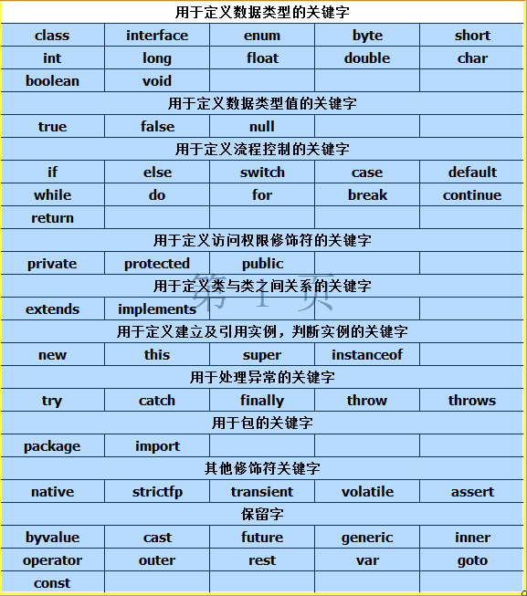
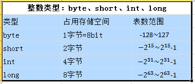
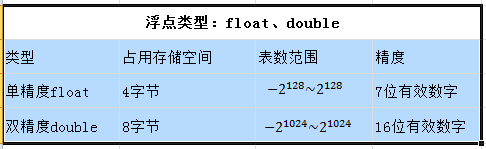
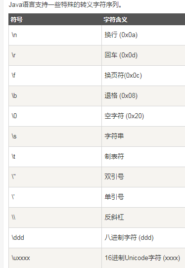
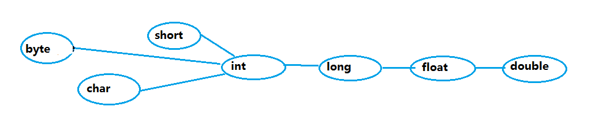

原文连接:https://www.cnblogs.com/su-peng/p/11606072.html
java的基本语法（1）
一、关键字
定义：被Java语言赋予特殊含义，用做专门用途的字符串
特点：关键字中的所有字母都为小写

二、标识符
定义：java对各种变量、方法和类等要素命名时所使用的的字符序列称为标识符（凡是自己可以起名字的地方都叫标识符）
合法规则：1.由26个英文字母大小写，0-9，_或$组成
2.数字不可以开头
3.不可以使用关键字或保留字，但能包含关键字和保留字
4.Java中严格区分大小写，长度无限制
5.标识符不能包含空格
命名规范：1.包名： 多单词组成时所有字母都小写：xxxyyyzzz
2.类名、接口名： 多单词组成时，所有单词的首字母大写：XxxYyyZzz
3.变量名、方法名： 多单词组成时，第一个单词首字母小写，第二个单词开始每个单词的首字母大写：xxxYyyZzz
4.常量名： 所有字母都要大写，多单词组成时每个单词用下换线连接：XXX_YYY_ZZZ
三、变量
概念：1.是内存中的一个存储区域
2.该区域有自己的名称（变量名）和类型（数据类型）
3.java中的每个变量必须先声明（定义），后使用
4.该区域的数据可以在同一类型范围内不断变化（例如先声明int i = 1；再声明i = 2；则i的值由1变为2）
5.变量是通过变量名来访问这块区域的
定义变量格式： 数据类型 变量名 = 初始化值
注意：1.变量的作用域：在一对{ }之间有效
2.必须有初始化值（第一次给变量赋值）：例如 int i = 0; 若直接只int m;则错误，因为没有给变量初始化
3.声明变量过程中的=，不同于数学意义上的=，在java中表示赋值
变量的分类——按数据类型（除了8种基本数据类型之外，其他的都是引用数据类型）

8种基本数据类型
1.整数类型：byte、short、int、long
注意：1.java各整数类型有固定的表数范围和字节长度，不受具体OS影响，以保证java程序的可移植性 例如: byte b = 129 就超出了byte的表数范围，不合法
2.java的整型常量默认为 int 型
3.声明 long 型常量须后加 ‘l’ 或 ‘L’（长整型） 例如：long l = 6L （最好用大写L，因为小写l和1相似）

’ 2.浮点类型：float、double
注意：1.Java浮点类型也有固定的表数范围和字段长度，不受OS影响
2.Java的浮点类型常量默认为 double 型
3.声明 float 型常量，须后加 ‘f’ 或 ‘F’
4.浮点型常量有两种表示形式：十进制数形式（如5.12 512.0f .512）必须有小数点
科学计数法形式（如5.12e2 512E2 100E-2）结尾的"E+数字"表示E之前的数字要乘以10的多少次方，比如3.14E3就是3.14 × 103 =3140，3.14E-3 就是 3.14 x 10-3 =0.00314。

3.字符类型：char
注意：1.char 型数据用来表示通常意义上的“字符”（2字节）
2.字符型常量的表现形式：字符常量是用英文单引号 '' 括起来的单个字符，涵盖世界上所有书面语的字符。例如：char c1 = 'a'; char c2 = '6'; char c3 = '中';
Java中还允许使用转义字符 '\' 来将其后的字符转变为特殊字符型常量。例如： char c3 = '\n'; // '\n' 表示换行符
3.char类型是可以进行运算的，因为它都对应有Unicode码。

布尔类型：boolean
注意：1.boolean类型适用于逻辑运算，一般用于程序流程控制：if条件控制语句;
while循环控制语句;
do-while循环控制语句;
for循环控制语句;
2.boolean类型数据只允许取值true和false，无null （不可用0或非0的整数代替true和false） 例如：boolean b1 = true;或boolean b1 = false;
基本类型之外为引用类型：例如String类
引用类型特点：1.在Java中，引用类型的变量非常类似于C/C++的指针。引用类型指向一个对象，指向对象的变量是引用变量。这些变量在声明时被指定为一个特定的类型，比如 Employee、Puppy 等。变量一旦声明后，类型就不能被改变了。
2.对象、数组都是引用数据类型。
3.所有引用类型的默认值都是null。
4.一个引用变量可以用来引用任何与之兼容的类型。
String类：1.值null可以赋值给任何引用类型的变量，用于表现这个引用变量中保存的地址为空，String类属于引用类型，可用null赋值
2.String类是一个典型的不可变类，String对象创造出来就不可能被改变。创造出的字符串将存放在数据区，保证每个字符串常量只有一个，不会产生多个副本 例如：int i0 = 1; int i1 = 1; 这种情况会在内存中储存两个1值，而String s0 = "hello"; String s1 = "hello"; 这种情况只会在内存中存在一个“hello”，假设“hello”的内存地址为xxxxxx，声明s0变量时给s0赋值“hello”实际上让s0变量引用“hello”的内存地址xxxxxx，当我们再声明变量s1也赋值“hello”的时候实际上也是直接把已经存在的“hello”的内存地址给s1引用
3.String类可以用加号拼接，例如：String s3 = "he" + "ll" + "o"; 输出为"hello"
基本数据类型转换
1.自动类型转换：容量小的数据类型自动转换为容量大的数据类型，数据类型按容量的大小排序为：

2.有多种类型的数据混合运算时，系统首先自动将所有的数据转换为容量最大的那种数据类型，然后再进行计算
3.byte,short,char,之间不会相互转换，他们三者在计算时首先转换为int
4.当把任何基本类型的值和字符串进行连接运算时（+），基本类型的值将自动转换为字符串类型
注意：1. 不能对boolean类型进行类型转换。
2. 不能把对象类型转换成不相关类的对象。
3. 在把容量大的类型转换为容量小的类型时必须使用强制类型转换。
4. 转换过程中可能导致溢出或损失精度，例如：
int i =128;
byte b = (byte)i;
因为 byte 类型是 8 位，最大值为127，所以当 int 强制转换为 byte 类型时，值 128 时候就会导致溢出。
5. 浮点数到整数的转换是通过舍弃小数得到，而不是四舍五入，例如：
(int)23.7 == 23;
(int)-45.89f == -45;
6.当有一系列的+的运算时，如果某个部分含有字符串，那么这个字符串往后都要按照字符串拼接去看，例如：
String str = 1 + 2 + 3 + "a" + 4 + 5; 打印结果为6a45
强制类型转换
1.条件是转换的数据类型必须是兼容的。
2.格式：(type)value type是要强制类型转换后的数据类型
int k = 7;
byte b = (byte)k; //转换的数据类型要用小括号括起来
3.通常，字符串不能直接转换为基本类型，但通过基本类型对应的包装类则可以实现把字符串转换为基本类型。
参考资料：https://www.runoob.com/java/java-basic-datatypes.html